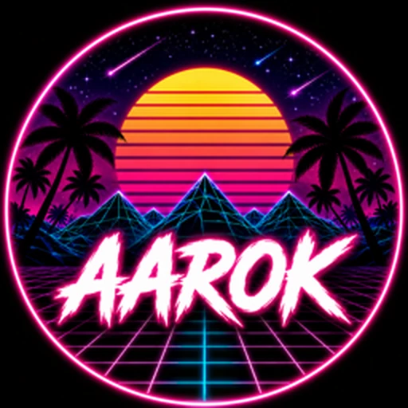

// Gaming • Tech • Stream
AAROK
Bienvenue dans mon univers — Choisis ta plateforme
YouTube
@aarok.gaming
Instagram
@aarok.gaming
Twitter / X
@AarokTV
TikTok
@aarok.tv
Twitch
@aaroktv
Discord
Serveur AAROK
Telegram
@AAROKG
Snapchat
aarok.gaming
Signal
aarok.10 — copier
Threads
@aarok.gaming
Bluesky
@aarok-g.bsky.social
Mastodon
@Aarok@mastodon.social
LinkedIn
AAROK.G
Facebook
Page AAROK
Pinterest
@AarokHub
TryHackMe
Cybersécurité — AAROK
Aarok Site
k413mp3r4.github.io/AAROK
Patreon
Soutiens AAROK
GTA5-Mods
Aarok — Mes mods